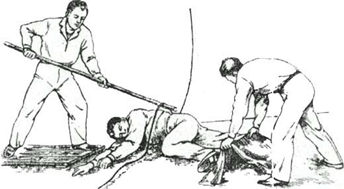

Безопасность военной службы - состояние военной службы, обеспечивающее защищенность военнослужащих, местного населения и окружающей природной среды от угроз, возникающих при осуществлении деятельности Вооруженных Сил Российской Федерации.
Обеспечение безопасности военной службы заключается в поддержании в полку (подразделении) условий военной службы и порядка ее несения, обеспечивающих защищенность личного состава и каждого военнослужащего в отдельности, а также местного населения, его имущества и окружающей среды от воздействия опасных факторов военной службы, возникающих в ходе повседневной деятельности полка (подразделения).
Общими условиями обеспечения безопасности военной службы в полку (подразделении) являются:
1. Правовое обеспечение безопасности военной службы, которое осуществляется:
- правотворческим обеспечением военной службы, включающим соответствующие мероприятия по совершенствованию организации участия Министерства обороны Российской Федерации в законопроектной деятельности, а также подготовке нормативно-правовых актов органов военного управления;
- улучшением правоисполнительной деятельности органов военного управления и воинских должностных лиц по реализации жизненно важных интересов военнослужащих, предотвращению причинения вреда жизни, здоровью и имуществу местного населения, окружающей среде при осуществлении деятельности войск (сил);
- повышением уровня правоохранительной работы, совершенствование деятельности органов военного управления и воинских должностных лиц по поддержанию правопорядка и воинской дисциплины в гарнизонах и воинских частях;
- улучшением правового воспитания личного состава Вооруженных Сил Российской Федерации;
- взаимодействием с государственными органами, органами военной прокуратуры при осуществлении ими контроля и надзора за соблюдением конституционных прав, свобод, льгот и социальных гарантий военнослужащих, состоянием правопорядка и выполнением природоохранительного законодательства в воинских частях.
2. Социально-экономическое обеспечение безопасности военной службы, которое осуществляется:
- взаимодействием с органами государственной власти субъектов Российской Федерации, федеральными органами исполнительной власти по проблемам финансирования расходов обороны с учетом реальных потребностей Вооруженных Сил Российской Федерации, разработки основных показателей государственного оборонного заказа, материального, технического обеспечения и энергоснабжения Вооруженных Сил Российской Федерации;
- взаимодействием с органами государственной власти Российской Федерации, органами государственной власти субъектов Российской Федерации и органами местного самоуправления вопросам реализации льгот и социальных гарантий, установленных законодательством для военнослужащих, разработки и выполнения целевых программ повышения социальной защищенности военнослужащих, строительства, выделения им жилья, особенно при увольнении из рядов Вооруженных Сил Российской Федерации, осуществления мероприятий по улучшению физической и морально-психологической подготовки граждан призывного возраста к военной службе;
- обеспечением эргономичности и надежности поставляемых в войска (силы) вооружения и военной техники;
- выполнением мероприятий материального, материально-технического обеспечения войск (сил) (обеспечение продовольствием, вещевым имуществом, горючим и смазочными материалами, комплектующими изделиями и материалами для вооружения и военной техники, другим материальным имуществом, ресурсами и услугами);
- совершенствованием бытового обеспечения личного состава Вооруженных Сил Российской Федерации (обеспечение казарменно-жилищным фондом, торгово-бытовое, банно-прачечное обслуживание, водоснабжение);
- проведением ветеринарно-санитарного надзора в Вооруженных Силах Российской Федерации.
3. Организационно-техническое обеспечение безопасности военной службы. Приоритетными мерами данного направления необходимо считать:
- подготовку военнослужащих к обеспечению безопасности военной службы;
- предупреждение летных, дорожно-транспортных, навигационных и иных происшествий с вооружением и военной техникой, обеспечение их безопасной эксплуатации;
- обеспечение ядерной и радиационной безопасности ядерных и радиационноопасных объектов, предотвращение несанкционированного применения ядерного оружия;
- обеспечение химической и биологической безопасности;
- обеспечение взрывобезопасности арсеналов, баз, складов и мест хранения вооружения и военной техники, ракет, боеприпасов и взрывчатых веществ, иных потенциально опасных военных объектов;
- обеспечение электробезопасности;
- обеспечение авиационной безопасности;
- обеспечение сохранности оружия, боеприпасов и взрывчатых веществ;
- обеспечение безопасности эксплуатации объектов гостехнадзора;
- улучшение эргономических характеристик вооружения и военной техники;
- проведение мероприятий по организации местной обороны;
- проведение метрологического надзора за состоянием и применением средств измерений;
- проведение научно-исследовательских и опытно-конструкторских работ по проблемам безопасности военной службы;
- разработка военных стандартов обеспечения безопасности военной службы для различных видов деятельности личного состава Вооруженных Сил Российской Федерации, эксплуатации образцов вооружения и военной техники.
4. Морально-психологическое обеспечение безопасности военной службы, которое осуществляется:
- четкой организацией воспитательной работы по повышению ответственности военнослужащих за обеспечение безопасности военной службы;
- обеспечением психологической устойчивости личного состава Вооруженных Сил Российской Федерации на основе постоянного анализа и прогнозирования его морально-психологического состояния, поддержания удовлетворительной морально-психологической обстановки в воинских коллективах, обеспечения психологической совместимости и предупреждения нарушений уставных правил взаимоотношений между военнослужащими, профилактики правонарушений;
- предупреждением самоубийств военнослужащих, совершенствованием индивидуальной работы, особенно с лицами с ослабленным состоянием здоровья, проявляющими признаки нервно-психической и эмоционально-волевой неустойчивости;
- проведением мероприятий по психологической реабилитации военнослужащих, участвующих (участвовавших) в выполнении задач в условиях вооруженных конфликтов, при чрезвычайном положении, а также в ликвидации последствий чрезвычайных ситуаций природного и техногенного характера;
- оказанием психологической помощи и поддержки вновь прибывшим и впервые назначенным на должности военнослужащим в освоении должностных, специальных обязанностей, в установлении правильных взаимоотношений с сослуживцами, начальниками и подчиненными;
- снятием морально-психологической напряженности в семьях военнослужащих, оказанием психологической помощи членам семей военнослужащих, проходящих военную службу по контракту;
- системным анализом и прогнозированием социальной обстановки в войсках (силах), разработкой и осуществлением мер по снижению возникающей социальной напряженности в воинских коллективах;
- проведением военно-социальной работы по обеспечению социальной защиты военнослужащих, членов их семей, реализации прав военнослужащих на обязательное личное государственное страхование, организации выполнения государственных социальных программ и решений;
- проведением информационно-пропагандистских акций и разъяснительной работы в войсках (силах) по созданию и обеспечению условий безопасности военной службы, формированию общественного мнения в воинских коллективах, способствующего реализации жизненно важных интересов военнослужащих, предотвращению причинения вреда жизни, здоровью и имуществу гражданских лиц, окружающей природной среде при осуществлении деятельности войск (сил);
- взаимодействием с общественными и религиозными объединениями, а также с офицерскими собраниями, товарищескими судами чести офицеров и прапорщиков, женскими советами, иными советами и комиссиями, действующих в воинских частях в интересах обеспечения безопасности военной службы;
- организацией профессионально-психологического отбора военнослужащих. Кандидатов гражданской молодежи при поступлении в военно-учебные заведения Министерства обороны Российской Федерации, а также граждан при их поступлении на военную службу по контракту;
- проведением мероприятий по улучшении досуга военнослужащих и членов их семей.
5. Медицинское обеспечение безопасности военной службы, которое достигается:
- постоянным осуществлением санитарно-эпидемиологического надзора за условиями жизни и быта войск (сил);
- проведением лечебно-профилактических мероприятий с военнослужащими;
- проведением военно-врачебной экспертизы граждан при призыве на военную службу, а также при поступлении на военную службу по контракту;
- систематическим анализом состояния заболеваемости и травматизма военнослужащих.
6. Гидрометеорологическое обеспечение безопасности военной службы, которое достигается:
- учетом климатических условий при решении вопросов размещения войск (сил), строительства военных объектов;
- проведением непрерывного контроля и прогнозирования гидрометеорологической обстановки в регионах дислокации войск (сил);
- оперативным оповещением и предупреждением органов военного управления войсками об опасных и стихийных гидрометеорологических явлениях.
7. Обеспечение экологической безопасности военной службы, которое достигается:
- осуществлением мероприятий по охране окружающей природной среды при эксплуатации вооружения и военной техники, в ходе боевой подготовки, иных видов деятельности войск (сил), в процессе функционирования режимных, особорежимных и особо важных военных объектов, объектов инфраструктуры;
- систематической оценкой экологического ущерба, разработкой и реализацией мер по восстановлению окружающей природной среды в районах расположения и действия войск (сил);
- строительством, ремонтом, реконструкцией и эксплуатацией природоохранных сооружений, разработкой и внедрением современных методов, технологий обследования, очистки и восстановления окружающей природной среды;
- экологически безопасной утилизацией (уничтожением) химического и ядерного оружия, реакторных отсеков атомных подводных лодок и надводных кораблей, ракетного и обычных видов вооружений, а также твердых и жидких радиоактивных отходов;
- экологическим обучением личного состава Вооруженных Сил Российской Федерации, формирование экологической культуры военнослужащих;
- взаимодействием с государственными и ведомственными природоохранительными органами при решении вопросов обеспечения экологической безопасности деятельности войск (сил).
322. Основными проводимыми в полку (подразделении) мероприятиями по предупреждению гибели (смерти), увечий (ранений, травм, контузий) и снижению заболеваемости военнослужащих являются:
- обеспечение психологической устойчивости личного состава на основе анализа его морально-психологического состояния, поддержания удовлетворительной морально-психологической обстановки в воинских коллективах, создания условий для психологической совместимости и предупреждения нарушений уставных правил взаимоотношений между военнослужащими, профилактики правонарушений;
- регулярная подготовка личного состава к выполнению мероприятий повседневной деятельности с изучением перед их проведением необходимых требований безопасности военной службы;
- контроль за выполнением личным составом требований безопасности военной службы;
- предупреждение гибели (смерти) и увечий (ранений, травм, контузий), в первую очередь среди военнослужащих, проходящих военную службу на воинских должностях, связанных с повышенной опасностью для жизни и здоровья (периодические проверки их теоретических знаний и практических навыков по выполнению требований безопасности военной службы при исполнении должностных обязанностей, обязательные медицинские осмотры (освидетельствования), в том числе с привлечением врача-психиатра);
- проведение санитарно-противоэпидемических (профилактических) и иных мероприятий по охране здоровья военнослужащих, предусмотренных главой 8 настоящего Устава;
- поддержание у личного состава высокой бдительности, обеспечение точного выполнения правил несения службы суточным нарядом, другие меры, направленные на противодействие терроризму;
- обеспечение пожарной безопасности и спасательных работ в соответствии со статьями 327-334 настоящего Устава;
- своевременное и в полном объеме обеспечение полка продовольствием, вещевым имуществом, горючим и смазочными материалами, комплектующими изделиями и материалами для вооружения и военной техники, другим военным имуществом, ресурсами и оказываемыми услугами;
- бытовое обеспечение личного состава (обеспечение казарменно-жилищным фондом, торгово-бытовое, банно-прачечное обслуживание, водоснабжение) в соответствии с установленными нормативами;
- взаимодействие с органами государственной власти субъектов Российской Федерации и органами местного самоуправления по вопросам реализации социальных гарантий и компенсаций, установленных законодательством Российской Федерации для военнослужащих;
- другие мероприятия по предупреждению причинения вреда жизни и здоровью военнослужащих с учетом особенностей их деятельности.
323. Основными проводимыми в полку мероприятиями по предупреждению причинения вреда жизни, здоровью и имуществу местного населения являются:
- принятие мер по исключению применения вооружения и военной техники в отношении гражданского населения, отдельных гражданских лиц и гражданских объектов, разработанных в соответствии с требованиями федеральных законов, воинских уставов и соответствующих руководств и инструкций;
- размещение потенциально опасных военных объектов полка за пределами санитарно-защитных зон населенных пунктов;
- организация взаимодействия командования полка с органами местного самоуправления в целях поддержания доброжелательных взаимоотношений между военнослужащими и местным населением;
- информирование населения о согласованных с органами местного самоуправления ограничительных мерах, установленных в районе дислокации полка.
324. Основными мероприятиями по охране окружающей среды от угроз, возникающих в ходе повседневной деятельности полка (подразделения), и рациональному природопользованию являются:
- изучение федеральных законов и иных нормативных правовых актов Российской Федерации об охране окружающей среды, экологическая подготовка и воспитание личного состава;
- предупреждение загрязнения окружающей среды в районе дислокации и в других местах выполнения мероприятий повседневной деятельности полка (подразделения);
- восстановление окружающей среды, загрязненной при выполнении мероприятий повседневной деятельности полка (подразделения), а также в случае аварий;
- рациональное природопользование (внедрение ресурсосберегающих, безотходных и малоотходных технологий, рекультивация земель, рациональное использование водных ресурсов и т.д.).
При разработке и выполнении указанных мероприятий учитываются требования законодательства Российской Федерации об охране окружающей среды, которые необходимо соблюдать при размещении, строительстве и эксплуатации гражданских объектов, в полной мере распространяются на военные объекты, вооружение и военную технику, за исключением чрезвычайных ситуаций, препятствующих соблюдению таких требований.
325. В полку в ходе различной деятельности военнослужащих может разрабатываться и осуществляться комплекс организационных и технических мероприятий по обеспечению безопасности военной службы, к которым относятся:
- подготовка военнослужащих к обеспечению безопасности военной службы;
- предупреждение летных, дорожно-транспортных и иных происшествий с вооружением и военной техникой, обеспечение их безопасной эксплуатации;
- обеспечение ядерной и радиационной безопасности ядерных и радиационно опасных объектов;
- обеспечение химической безопасности;
- обеспечение биологической безопасности;
- обеспечение пожарной безопасности вооружения и военной техники, боеприпасов и взрывчатых веществ, другого военного имущества в местах их хранения, иных потенциально опасных объектов полка;
- обеспечение сохранности оружия, боеприпасов и взрывчатых веществ;
- обеспечение электробезопасности;
- другие организационные и технические мероприятия по обеспечению безопасности различных видов деятельности военнослужащих, эксплуатации различных образцов (комплексов, систем) вооружения и военной техники и иные дополнительные меры.
Военнослужащий обязан знать и соблюдать в повседневной деятельности требования безопасности военной службы. Он должен заботиться о сохранении своего здоровья, повседневно заниматься закаливанием, физической подготовкой и спортом, воздерживаться от вредных привычек (курения, употребления алкоголя), не допускать употребления наркотических средств и психотропных веществ.
Солдат (матрос) в мирное и военное время отвечает: за точное и своевременное исполнение возложенных на него обязанностей, поставленных ему задач и соблюдение при этом требований безопасности военной службы, а также за исправное состояние своего оружия, вверенной ему военной техники и сохранность выданного ему имущества. Он подчиняется командиру отделения.
Солдат (матрос) обязан: соблюдать требования безопасности военной службы на занятиях, стрельбах, учениях, при обращении с оружием и техникой, несении службы в суточном наряде и в других случаях.
Каждый военнослужащий должен строго соблюдать требования безопасности военной службы. В этих целях он обязан:
- изучать безопасные методы и приемы исполнения своих должностных и специальных обязанностей, инструктироваться по требованиям безопасности военной службы, стажироваться на месте исполнения указанных обязанностей, а также проходить проверки теоретических знаний и практических навыков по выполнению требований безопасности;
- правильно применять средства индивидуальной и коллективной защиты, а в необходимых случаях уметь использовать лечебно-профилактические средства и оказывать первую помощь;
- немедленно докладывать своему непосредственному командиру (начальнику) о любой сложившейся по вине военнослужащих ситуации, угрожающей жизни и здоровью военнослужащих, жизни, здоровью и имуществу местного населения либо причинением вреда окружающей среде, а также о каждом факте получения им или другим военнослужащим увечий (ранений, травм, контузий) при выполнении мероприятий повседневной деятельности или об ухудшении состояния своего здоровья;
- проходить в установленные сроки медицинские осмотры (обследования).
3.2. Ответственность военнослужащих за невыполнение установленных и доведенных до него требований безопасности.
Военнослужащие независимо от воинского звания и воинской должности равны перед законом и могут привлекаться к дисциплинарной, административной, материальной, гражданско-правовой и уголовной ответственности в зависимости от характера и тяжести совершенного ими правонарушения в следствие нарушения установленных требований безопасности.
Наиболее часто уголовная ответственность наступает в следствие нарушения правил обращения с оружием и предметами, представляющими повышенную опасность для окружающих(ст. 349 УК РФ) и нарушения правил вождения или эксплуатации машин (ст. 350 УК РФ).
Статья 349. Нарушение правил обращения с оружием и предметами, представляющими повышенную опасность для окружающих.
1. Нарушение правил обращения с оружием, боеприпасами, радиоактивными материалами, взрывчатыми или иными веществами и предметами, представляющими повышенную опасность для окружающих, если это повлекло по неосторожности причинение тяжкого или средней тяжести вреда здоровью человека, уничтожение военной техники либо иные тяжкие последствия, - наказывается ограничением по военной службе на срок до двух лет или содержанием в дисциплинарной воинской части на срок до двух лет.
2. То же деяние, повлекшее по неосторожности смерть человека, - наказывается лишением свободы на срок до пяти лет.
3. Деяние, предусмотренное частью первой настоящей статьи, повлекшее по неосторожности смерть двух или более лиц, - наказывается лишением свободы на срок до десяти лет.
Комментарий к статье 349.
Правила обращения с оружием и иными предметами, представляющими повышенную опасность для окружающих, определены различными нормативными актами: уставами внутренней, гарнизонной и караульной служб, курсами стрельб из различных видов оружия, наставлениями по стрелковому и минометному делу, руководствами по хранению отдельных видов боеприпасов, взрывчатых, химических, радиоактивных и других веществ.
Под оружием в широком смысле слова следует понимать устройства и средства, применяемые для уничтожения живой силы противника, его техники и сооружений: ядерное, химическое, огнестрельное, реактивное, минное, торпедное и др.
Под боеприпасами имеется в виду артиллерийские и реактивные снаряды, боевые части ракет и торпед, авиационные и глубоководные бомбы, патроны, гранаты, мины, фугасы и т. п.
Радиоактивные материалы, взрывчатые и иные вещества, представляющие повышенную опасность для окружающих, включают в себя большую совокупность различных веществ, находящихся в распоряжении Вооруженных Сил, других войск и воинских формирований.
Нарушение правил обращения с оружием, боеприпасами и другими предметами, представляющими повышенную опасность для окружающих, выражается в невыполнении или в ненадлежащем выполнении установленных приемов и способов их использования, хранения, транспортировки или применения.
Состав преступления образуется лишь тогда, когда нарушение правил обращения с перечисленными в статье предметами повлекло причинение тяжкого или средней тяжести вреда здоровью человека, уничтожение военной техники или иные тяжкие последствия.
Под иными тяжкими последствиями понимается срыв выполнения боевой задачи, снижение боеготовности подразделения, разрушение военных сооружений и т. п.
Части 2 и 3 в качестве преступных последствий предусматривают смерть одного или нескольких человек.
По субъективной стороне рассматриваемое преступление является неосторожным.
Субъектом преступления может быть любой военнослужащий, проходящий службу по призыву или по контракту в Вооруженных Силах, других войсках и воинских формированиях, который обязан был соблюдать правила обращения с оружием и предметами, представляющими опасность для окружающих.
Статья 350. Нарушение правил вождения или эксплуатации машин.
1. Нарушение правил вождения или эксплуатации боевой, специальной или транспортной машины, повлекшее по неосторожности причинение тяжкого или средней тяжести вреда здоровью человека, - наказывается арестом на срок от четырех до шести месяцев, либо содержанием в дисциплинарной воинской части на срок до двух лет, либо лишением свободы на срок до двух лет с лишением права занимать определенные должности или заниматься определенной деятельностью на срок до трех лет или без такового.
2. То же деяние, повлекшее по неосторожности смерть человека, - наказывается лишением свободы на срок от двух до пяти лет с лишением права занимать определенные должности или заниматься определенной деятельностью на срок до трех лет или без такового.
3. Деяние, предусмотренное частью первой настоящей статьи, повлекшее по неосторожности смерть двух или более лиц, - наказывается лишением свободы на срок от четырех до десяти лет.
Комментарий к статье 350.
Правила вождения или эксплуатации боевой, специальной или транспортной машины определены Правилами дорожного движения, Наставлением по автомобильной службе, руководствами или инструкциями по эксплуатации различных видов боевых и специальных машин.
К боевым машинам относятся танки, бронетранспортеры, самоходные артиллерийские и ракетные установки, машины с передвижными командными пунктами и др.
Специальные машины представляют собой самоходные технические средства, предназначенные для выполнения специальных функций: строительных, пожарных, медицинских, ремонтных и т. п.
Транспортные машины (легковые и грузовые) предназначены для перевозки личного состава, вооружения, боеприпасов, имущества и других грузов.
Одним из признаков, отличающих квалификацию деяния по данной статье от квалификации по ст. 264 (общеуголовное деяние - нарушение правил дорожного движения и эксплуатации транспортных средств), является принадлежность машины воинским частям и учреждениям Вооруженных Сил, других войск и воинских формирований.
Уголовно наказуемыми нарушениями правил вождения и эксплуатации являются только такие, которые повлекли причинение тяжкого или средней тяжести вреда здоровью человека (ч. 1), смерть человека (ч. 2), смерть двух или более лиц (ч. 3).
Уничтожение или повреждение машин в число преступных последствий не входит.
Субъективная сторона преступления характеризуется неосторожной виной в виде легкомыслия или небрежности.
По устоявшейся судебной практике субъектом нарушения правил вождения может быть любой военнослужащий, управляющий военной машиной.
Субъектом нарушения правил эксплуатации машин может быть военнослужащий, на которого возложена обязанность по эксплуатации боевых, специальных и транспортных машин. Это может быть водитель, закрепленный за автомашиной, начальник контрольно-технического пункта, военнослужащие, на которых возложены обязанности ремонта и технического обслуживания машин.
Несчастные случаи с военнослужащими: их обстоятельства, причины и возможные последствия.
Электротравмы
При стихийных бедствиях, производственных авариях, нарушениях исправности электроприборов, воздействии молнией и при других несчастных случаях возможны поражения людей электрическим током – электротравмы.
Они вызывают болевые ощущения, судорожные сокращения мышц, расстройство деятельности нервных центров, органов дыхания и кровообращения. Может наблюдаться и мгновенная смерть. На месте соприкосновения с источником поражения возникают так называемые знаки тока, иногда ожоги различной степени, вплоть до обугливания и сгорания отдельных частей тела. Тяжесть электротравмы зависит от величины и степени воздействия тока, путей его прохождения через организм.
Возможны поражения электрическим током вследствие несанкционированного преодоления электризуемых проволочных заграждений, применяемых для охраны и обороны различных объектов, в том числе и военного назначения.
Поражение электрическим током возникает не только от прикосновения к источнику электричества, но и при приближении к установкам с высоким напряжением на расстояние, достаточное для образования искры или вольтовой дуги.
Утопление
Утопление обычно наблюдается в результате пренебрежения правилами купания. Причинами утопления могут быть неумение плавать, недомогание, переутомление, предшествующее перегревание, алкогольное опьянение, испуг находящегося в воде человека. Иногда тонут из-за переоценки своих возможностей даже хорошие пловцы. Утопление имеет место при форсировании водных преград, стихийных бедствиях, связанных с наводнениями и большим подъемом воды.
Падение с высоты
При падении с высоты самым легким поражением пострадавшего может быть ушиб.
На месте ушиба быстро появляется припухлость, возможен и кровоподтек (синяк). При разрыве крупных сосудов под кожей могут образоваться скопления крови (гематомы).
При ушибе, прежде всего, необходимо создать покой поврежденному органу. На область ушиба необходимо наложить давящую повязку, придать этой области тела возвышенное положение, что способствует прекращению дальнейшего кровоизлияния в мягкие ткани. Для уменьшения болей и воспалительных явлений к месту ушиба прикладывают холод - пузырь со льдом, холодные компрессы.
Другим результатом падения может быть перелом. Переломом называется нарушение целости кости.
Переломы делятся на закрытые (без повреждения кожи) и открытые, при которых имеется повреждение кожи в зоне перелома. Для перелома характерны: резкая боль, усиливающаяся при любом движении и нагрузке на конечность, изменение положения и формы конечности, нарушении ее функции (невозможность пользоваться конечностью), появление отечности и кровоподтека в зоне перелома, укорочение конечности, патологическая (ненормальная) подвижность кости.
Засыпка грунтом
Пострадавшие, оказавшиеся под завалами зданий, оборонительных сооружений и т.п., могут иметь различные повреждения, а также находиться в состоянии острой гипоксии от удушья, вызванного закупоркой дыхательных путей пылью, землей, недостатком, воздуха, сдавлением груди и шеи.
Практические действия военнослужащего по оказанию первой помощи при несчастном случае с сослуживцем
Электротравмы
Попавшего под напряжение человека в первую очередь необходимо как можно быстрее освободить от воздействия электрического тока. Если невозможно отключить ток выключателем, рубильником или вывернуть электрические пробки, нужно перерубить провода топором с деревянной ручкой или инструментом, ручка которого обернута изолирующим материалом. Скрученные в шнур провода во избежание короткого замыкания и ожога следует пересекать по одному, на некотором расстоянии друг от друга.

Освобождение пострадавшего от действия электрического тока
Можно убрать провода или токопроводящую часть находящегося под напряжением предмета сухой доской, палкой, жердью, сухой скаткой шинели и другими предметами.
Когда электрический ток проходит через тело пострадавшего в землю, нужно ему под ноги пододвинуть сухую доску или другой изолирующий материал. Очень важно при этом соблюдать меры предосторожности, чтобы самому не попасть под напряжение. В этом случае желательно пользоваться резиновыми перчатками и резиновой обувью.
У пострадавших от молнии нередко обнаруживаются тяжелейшие травмы - отрыв конечностей, раздробление костей, параличи конечностей и т.п. Характерно появление на коже извилистого ветвистого рисунка красноватого цвета.
После освобождения пострадавшего от действия тока в случае остановки дыхания и сердцебиения необходимо немедленно приступить к закрытому массажу сердца и экспираторному дыханию «изо рта в рот» или «изо рта в нос». Успех реанимации определяется своевременностью начала этих мероприятий – они должны проводиться, как правило, не позднее 1–2 минут после поражения электрическим током.
При сохранении дыхания и сердцебиения, но бессознательном состоянии пострадавшего ему необходимо расстегнуть одежду, обеспечить приток свежего воздуха, дать понюхать нашатырный спирт или обрызгать лицо водой и в боковом стабилизировнном положении эвакуировать пострадавшего в лечебное учреждение.
Находящемуся в сознании пострадавшего нужно обязательно уложить, не позволяя оставаться на ногах, так как возможны осложнения, связанные с тяжелым нарушением кровообращения и обмена веществ. На обожженные участки тела накладывается стерильная повязка. Пострадавшего следует оберегать от охлаждения.
Для объективной оценки тяжести состояния и назначения дальнейшего лечения необходимо как можно быстрее вызвать к месту происшествия врача.
Профилактика электротравм заключается в точном выполнении требований техники безопасности при монтаже, эксплуатации и ремонте электроустановок и электроприборов.
Утопление
При спасении утопающего в первую очередь следует позаботиться о собственной безопасности. Для утопающего характерны судорожные, не всегда достаточно осознанные движения, которые могут представлять серьезную опасность для спасателя.
Подплывать к утопающему следует сзади и, схватив его за волосы или подмышки, перевернуть лицом вверх таким образом, чтобы оно было над водой. Пострадавшего нужно как можно быстрее вытащить из воды, освободить от затрудняющей дыхание одежды (расстегнуть воротник, поясной ремень и др.).
После этого спасатель укладывает пострадавшего животом на бедро своей согнутой в колене ноги лицом вниз, чтобы голова пострадавшего находилась ниже туловища, очищает полость рта от ила, песка, слизи. Затем энергичным надавливанием на корпус освобождает легкие и желудок от воды. На очищение дыхательных путей и их освобождение от воды следует тратить не более 20-30 с.
Удаление воды из дыхательных путей
Если у пострадавшего отсутствует дыхание, необходимо, не теряя ни минуты, начинать реанимационные мероприятия.
Восстановить жизнедеятельность пострадавшего можно, если человек пробыл под водой не более 5 мин, и ему немедленно была оказана помощь. Однако наблюдаются случаи, когда из-за спазма гортани легкие не заполняются водой, а сердце при этом еще некоторое время продолжает работать. В этих случаях спасение возможно даже после получасового пребывания человека под водой.
Следует помнить, что искусственное дыхание и закрытый массаж сердца являются лишь первоочередными мероприятиями.
Для определения тяжести состояния и дальнейшего лечения необходимо без промедления вызвать врача и по возможности быстро транспортировать пострадавшего в лечебное учреждение, где должны быть продолжены реанимационные мероприятия в полном объеме.
Падение с высоты
При падении с высоты на различных участках тела часто появляются открытые кровоточащие раны. Они могут стать причиной большинства смертельных исходов вследствие острой кровопотери, поэтому первые мероприятия должны быть направлены на остановку кровотечения любым возможным способом (прижатие сосуда, давящая повязка, а при выраженном артериальном или венозном кровотечении – наложение жгута и др.). Не менее важная задача первой помощи - защита раны от загрязнения и инфицирования. Правильная обработка раны препятствует развитию осложнений в ране и почти в 3 раза сокращает время ее заживления.
Обработку раны следует проводить чистыми, лучше продезинфицированными руками. Накладывая асептическую повязку, не следует касаться руками тех слоев марли, которые будут непосредственно соприкасаться с раной.
Рана может быть защищена простым наложением асептической повязки (бинт, индивидуальный пакет, косынка). Кожу вокруг раны смазывают 5% йодной настойкой, удаляют из раны свободно лежащие инородные тела.
При оказании первой помощи больному с проникающим ранением груди, необходимо как можно раньше с помощью герметизирующей повязки прекратить сообщение плевральной полости с внешней средой.
Рану нельзя промывать водой - это способствует инфицированию. Нельзя допускать попадания прижигающих антисептических веществ в раневую поверхность. Рану нельзя засыпать порошками, накладывать на нее мазь, нельзя непосредственно к раневой поверхности прикладывать вату, - все это способствует развитию инфекции в ране.
Главная задача первой помощи при переломах костей – немедленно сделать отломки кости неподвижными, придав конечности неподвижное положение (иммобилизация конечности). Это осуществляется наложением шины. Шина может быть стандартной (табельной) или изготовляться из подручного материала (доски, куски фанеры, палки, оружие и т. п.).
Основные мероприятиями первой помощи при переломах костей:
- создание неподвижности костей в области перелома;
- проведение мер, направленных на борьбу с шоком или на его предупреждение;
- организация немедленной доставки пострадавшего в лечебное учреждение.
Быстрое создание неподвижности костей в области перелома – иммобилизация уменьшает боль и является главным моментом в предупреждении шока. Иммобилизация конечности достигается наложением транспортных шин или шин из подручного твердого материала.
Наложение шины нужно проводить непосредственно на месте происшествия и только после этого транспортировать больного.
При открытом переломе перед иммобилизацией конечности необходимо наложить асептическую повязку. При кровотечении из раны должны быть применены способы временной остановки кровотечения (давящая повязка, наложение жгута и др.) введено обезболивающее средство из шприц-тюбика аптечки индивидуальной.
Засыпка грунтом
После осторожного извлечения пострадавшего из-под обвала ему очищают рот и нос и, при необходимости, производят реанимационные мероприятия. После восстановления у пострадавшего самостоятельного дыхания при необходимости проводят противошоковые мероприятия, наложение повязки, иммобилизацию переломов, а затем – эвакуация в лечебное учреждение.
Особое внимание обращают на выявление факта длительного сдавления пострадавшего. Своеобразный комплекс расстройств, называемый синдромом сдавления, возникает и развивается в результате продолжительного (свыше 3 часов) сдавления мягких тканей - чаще нижних конечностей. Этот синдром развивается после возобновления кровообращения при освобождении от длительного сдавления тканей. Тяжесть состояния пострадавших зависит от обширности повреждения мягких тканей и длительности нахождения под обломками завалов. На конечностях, подвергшихся длительному сдавлению, наблюдается бледность, иногда синюшные пятна. Общее состояние пострадавших вначале обычно не вызывает опасений. Однако через несколько часов появляется синюшно-багровая окраска конечности, на коже возникают пузыри, наполненные кровянистым содержимым. В последующем отмечается омертвение тканей. Всасывание ядовитых продуктов распада поврежденных тканей приводит к резкому ухудшению общего состояния пострадавших, особенно существенно снижается функция почек. Возможно полное прекращение выделения мочи.
В случае установления признаков длительного сдавления пострадавших рассматривают как тяжелопораженных независимо от их состояния. Оказание им медицинской помощи начинается с быстрого устранения сдавления, тугового бинтования (от стопы) и транспортной иммобилизации поврежденной конечности. Необходимо ввести анальгетик из шприц-тюбика. При тяжелых повреждениях конечности – накладывают жгут.